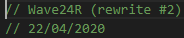

Crystal FM: A radio-like music bot for Discord.
Introduction

Crystal FM was a bot built for playing music in voice channels on Discord. Unlike most Discord music bots at the time, Crystal FM was not intended for on-demand song requests. Instead, it was supposed to provide easy access to a steady stream of specific songs.
The songs Crystal FM played mostly consisting of 80s, 70s and 60s pop music, intertwined with a wide range of instrumental tracks. They could've been songs I'd heard from the radio, films, e.t.c.
I ran Crystal FM 24/7 for about a year, after which it was no longer practical to keep the bot running. The bot was primarily used in a server of online friends where we would regularly listen to music together.
History
Before all of this, however, Crystal FM existed under a different name as Wave24R. This was short for Wave24 Radio, with the "24" referencing the 24/7 music playback in a dedicated voice channel. This version of the bot was only hosted in my personal Discord server, and was accompanied by a separate bot titled Pre70sR, short for Pre-1970s Radio. As the name suggests, this version of the bot was dedicated to all things pre-1970s, and played any older tracks I added to the collection. This meant that Wave24 could continue without mixing multiple distinct eras, creating a more consistent listening experience.

There are three iterations of the code powering Crystal FM:
- Wave24R Discord Bot
- Wave24R Icecast Server
- Crystal FM based on "S.A.F.E." This was the final rewrite of Crystal FM
This version of Wave24R is a modular Discord bot built to represent different "brands" of music bot (such as Crystal FM).
This version of Wave24R was intended for use as an internet radio station. It created an audio livestream to broadcast the music to any client.
This worked in parallel with a simple Discord bot I built to listen to the stream (amongst others) in any Discord voice channel.
To use it, you simply joined a voice channel and sent a command specifying which station you wanted to listen to.
Technical Details
Crystal FM was written in JavaScript. More specifically, the server-side runtime environment Node.js.